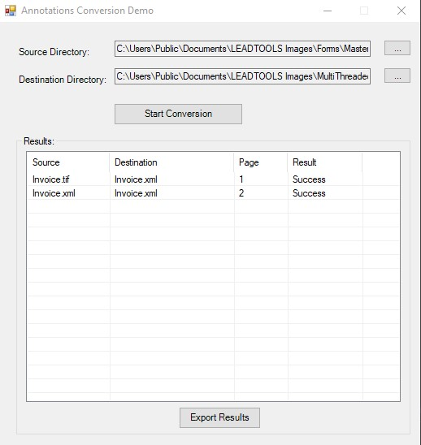

Annotation Conversion DemoDemonstrates how to convert old LEADTOOLS annotations formats to the new format (Annotations.Engine). Also converts from annotations saved as tags inside TIFF files or embedded inside PDF files into a LEADTOOLS annotations XML file. |
 |